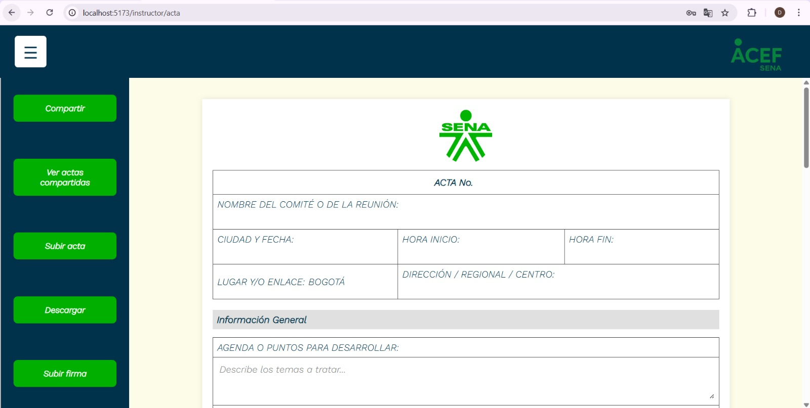
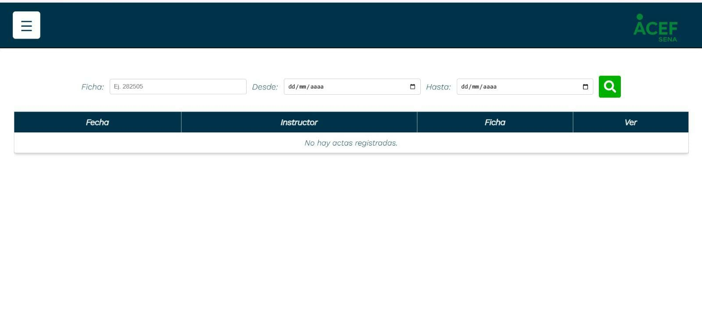
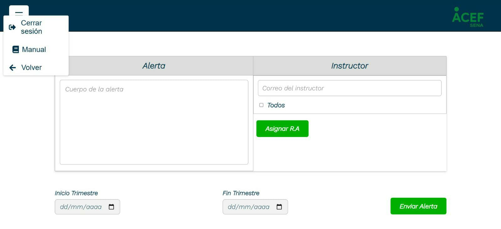
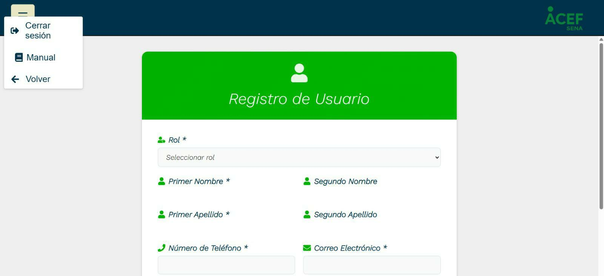

Manual de Usuario – ACEF
Centro de Gestión de Mercados, Logística y Tecnologías de la Información - SENA
2826505 – Análisis y Desarrollo de Software
Versión 1 | 21 de mayo de 2025
1. Introducción
La gestión educativa en el SENA demanda herramientas eficientes para optimizar procesos y garantizar la calidad de la formación. Un software especializado permitiría centralizar la información sobre fichas de formación, competencias, contenidos y resultados de aprendizaje. Esta solución facilitaría la creación y seguimiento de programas, la evaluación del desempeño de los aprendices y la generación de informes detallados. Además, al automatizar tareas y mejorar la comunicación, se optimizaría el tiempo de los coordinadores y se fortalecería la toma de decisiones basadas en datos. En definitiva, esta herramienta se convertiría en un aliado estratégico para el SENA, contribuyendo a mejorar la eficiencia y la eficacia de sus procesos formativos.
2. Objetivo del Sistema
Desarrollar un software especializado que centralice y optimice la gestión educativa del SENA, facilitando el seguimiento de programas, evaluación de aprendices y toma de decisiones basada en datos.
3. Público Objetivo
- Instructores
- Coordinadores académicos
- Administradores del sistema
4. Requisitos del Sistema
- Navegador compatible: Google Chrome, Mozilla Firefox
- Conexión a internet
- Usuario y contraseña institucional
5. Ingreso al Sistema
- Acceder a:
https://actas.institucion.edu - Ingresar usuario y contraseña
- Presionar el botón "Iniciar sesión"
6. Módulos y Funcionalidades
6.1. Módulo de Inicio de Sesión
Permite autenticación de usuarios. Accesible a todos los perfiles.
- Ingreso de credenciales
- Validación de usuario
- Recuperación de contraseña
6.2. Filtros y Consultas
Visualiza fichas registradas según criterios como número, nombre o estado.
- Búsqueda de fichas
- Visualización de datos
Ejemplo de pantalla:

6.3. Gestión de Actas (Instructor)
- Cargar acta de cierre
- Entregar para revisión
- Consultar estado
- Descargar acta
- Firmar a desarrollar un software especializado que centralice y optimice la gestión educativa del SENA, facilitando el seguimiento de programas, evaluación de aprendices y toma de decisiones basada en datos.
- Compartir acta
Ejemplo de pantalla (por cargar):
6.4. Gestión de Actas (Coordinador)
- Actualizar plantillas
- Visualizar actas subidas
Ejemplo de pantalla:
6.5. Alertas
Generación de alertas relacionadas con cierre de trimestre y resultados asignados.
- 7 días antes del cierre
- 3 días antes si no entregó acta
- El día del cierre
- Asignación de resultados
Ejemplo de pantalla:
6.6. Registro
Creación de nuevos usuarios por parte del Coordinador.
Ejemplo de pantalla:
7. Flujo de Trabajo del Sistema
7.1. Inicio de Sesión
Valida credenciales → acceso o mensaje de error.
7.2. Dashboard
- Consultar Fichas
- Gestionar Actas
- Ver Alertas
- Registro de usuarios
7.3. Consultas de Fichas
- Buscar por programa, número, competencia o resultado
- Ver detalles
7.4. Gestión de Actas
- Subir acta
- Descargar PDF
- Firmar acta
- Compartir acta
- Ver historial
7.5. Alertas
Crear alertas y enviarlas por correo.
7.6. Registro
El coordinador crea el usuario y lo registra.
7.7. Cierre de sesión
Finaliza la sesión y vuelve al login.
8. Consideraciones de Seguridad
- No compartir credenciales
- Cerrar sesión al finalizar
- Reportar inconsistencias
9. Soporte Técnico
- Correo: soporte@acef.co
- Teléfono: 3215941046
- Horario: Lunes a viernes, 8:00 a.m. a 5:00 p.m.
10. Glosario
- Acta de cierre
- Documento con notas finales.
- Coordinador
- Valida actas.
- Inicio de Sesión
- Acceso al sistema con credenciales.
- Usuario
- Persona autorizada.
- Ficha
- Información del grupo de aprendices.
- Consulta de Fichas
- Visualización de fichas.
- Acta
- Documento del cierre de trimestre.
- Subir Acta
- Cargar acta al sistema.
- Descargar Acta
- Obtener copia del acta.
- Alerta
- Notificación enviada por el coordinador.
- Dashboard
- Pantalla principal.
- Credenciales
- Datos de acceso.
- Permisos
- Niveles de acceso por rol.
11. Anexos
Guía Rápida de Uso
- Iniciar sesión
- Consultar fichas
- Subir acta
- Descargar acta
- Firmar acta
- Compartir acta
- Generar alertas
- Cerrar sesión
✅ Recomendaciones Finales
- Verifica tu conexión
- Usa navegador actualizado
- No compartas credenciales
- Cierra sesión al terminar